Cara memakai Mubeena
Lima menu di bagian bawah aplikasi: Baca, Dengar, Takrir, Setor, dan Peta. Panduan ini menjelaskan semuanya dalam beberapa menit.
Sebelum mulai
- Saat pertama dibuka, sambungkan ke internet: data Al-Qur'an diunduh sekali, sekitar 5 MB.
- Izinkan mikrofon saat diminta. Suara Anda diperiksa AI langsung di HP dan tidak dikirim ke mana pun.
- Panduan singkat di dalam aplikasi bisa dibuka lagi kapan saja: ikon pengaturan di kanan atas › Panduan singkat.
📖 Baca
Mushaf Madinah lengkap. Geser ke kiri atau kanan untuk membalik halaman.
- Cari surah atau juz di bilah atas, atau tombol Pergi ke untuk langsung ke ayat atau halaman tertentu. Nama surah bisa diketik, misalnya "yasin".
- Ketuk sebuah ayat untuk melihat terjemahannya dan menandainya.
- Penanda (ikon pita di atas) menyimpan tempat terakhir Anda membaca, dengan nama dan warna sendiri.
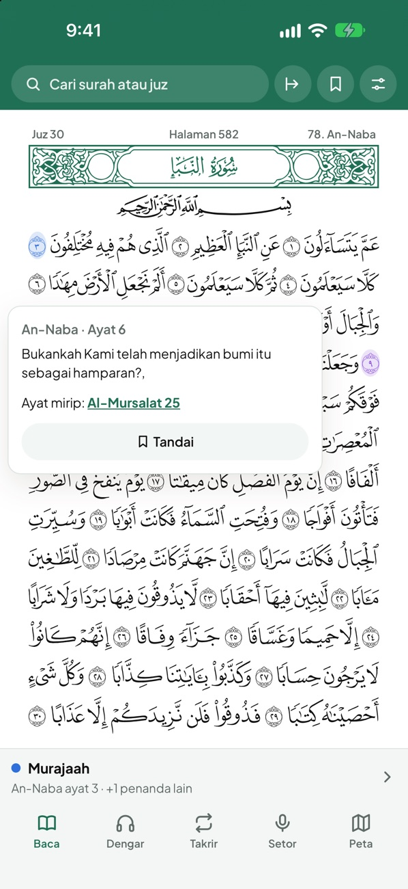
🎧 Dengar
Mendengarkan qari untuk menghafal. Pilih dari lima qari: Al-Husary, Mishary Alafasy, Saad Al-Ghamidi, Sa'ud Asy-Syuraim, dan Yasser Ad-Dossary.
- Ketuk ayat di mushaf, lalu pilih Dari sini dan Sampai sini. Atau buka tombol pengaturan di baris bawah dan pilih surah serta ayatnya.
- Atur Ulangi tiap ayat, Ulangi rentang, atau Berhenti sesudah tiap ayat untuk menirukan qari.
- Tekan Putar. Suara tetap terdengar walau layar dikunci.
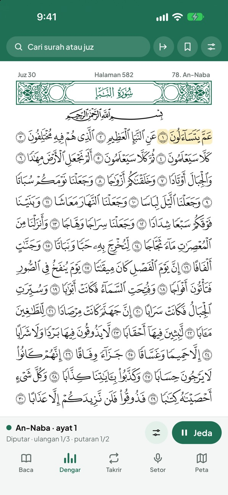
🔁 Takrir
Mengulang-ulang hafalan sampai lancar.
- Buka pengaturan Takrir, pilih rentang ayat dan target ulangan (misalnya 10×).
- Baca rentang itu, lalu tekan +1 setiap selesai satu putaran.
- Atau nyalakan Hitung otomatis dengan AI: AI menyimak dan menambah hitungan sendiri setiap Anda sampai di akhir rentang, menandai kata yang salah, dan qari membantu saat Anda lupa.
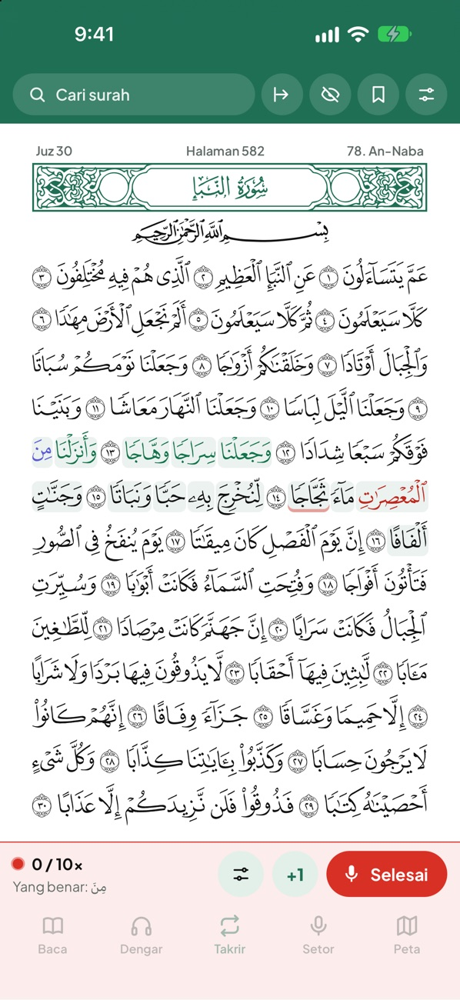
🎙️ Setor
Setor hafalan, disimak AI seperti kepada seorang ustadz.
- Buka halaman atau surah yang ingin disetor. Untuk mulai dari ayat tertentu, ketuk ayatnya lalu Mulai baca dari sini.
- Ingin setor tanpa melihat teks? Nyalakan Mode hafalan (ikon mata di atas). Ketuk kata yang tertutup untuk mengintip.
- Tekan Mulai Membaca, lalu baca dengan suara jelas dan tempo biasa. Warna kata berubah mengikuti bacaan Anda.
- Salah baca: kata menjadi merah dan terdengar bunyi peringatan. Kalau tidak langsung dibetulkan, qari membacakan yang benar, lalu ulangi dari situ.
- Lupa: diam sekitar 5 detik, kata berikutnya muncul dan dibacakan qari. Lanjutkan sesudahnya.
- Tekan Selesai. Lembar hasil menunjukkan yang benar, yang salah, dan yang dibantu. Tekan Simpan ke peta hafalan untuk mencatatnya.
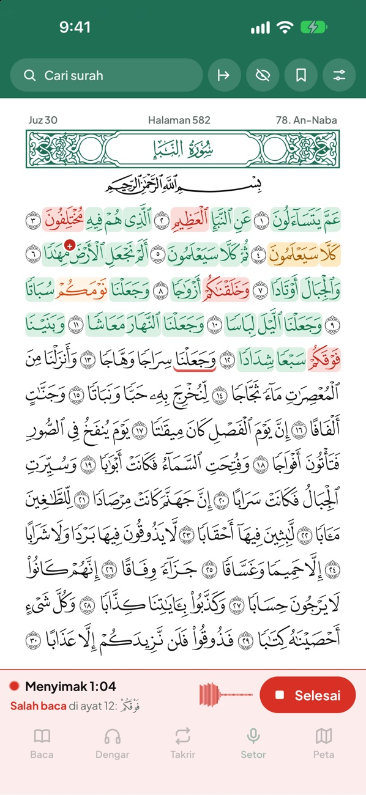
Qari menuntun, lalu lihat hasilnya
Pengaturan bantuan ada di tombol pengaturan Setor: Bantuan saat lupa, Tuntun sesudah salah, dan bunyi peringatan. Semuanya bisa dimatikan.
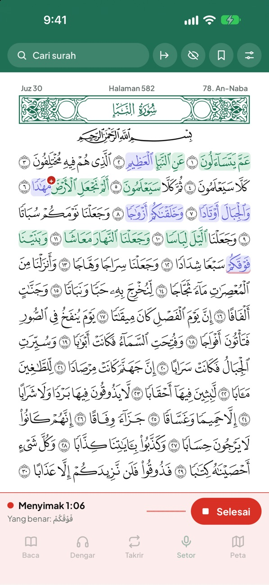
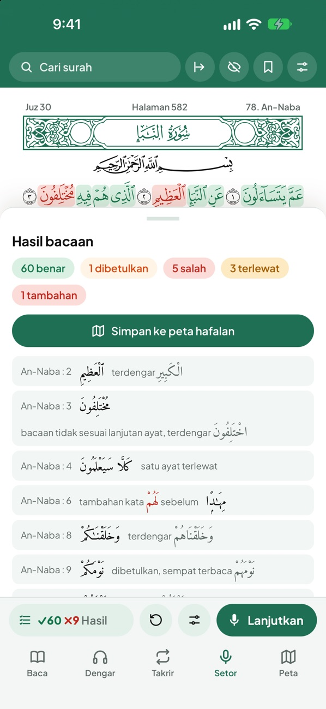
Arti warna
- benar dibaca dengan benar
- salah salah baca, terlewat, atau ada kata tambahan
- dibetulkan sempat salah, lalu dibetulkan sendiri
- dibantu dibantu qari saat lupa atau sesudah salah
- catatan pelafalan kurang jelas, tidak dihitung salah hafalan
- garis abu-abu AI sedang memeriksa ulang kata itu
🗺️ Peta
Peta hafalan: setiap kata yang pernah disetor diwarnai sesuai hasil terakhirnya, jadi Anda tahu bagian mana yang sudah lancar dan mana yang perlu diulang. Tombol Ringkasan menunjukkan kemajuan per surah dan per juz.
Data hanya tersimpan di HP Anda. Buat cadangan lewat pengaturan › Cadangan data, supaya bisa dipindah ke HP baru.
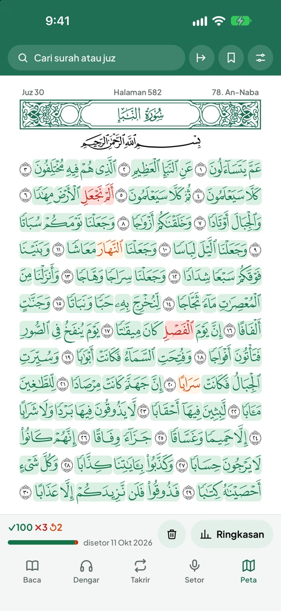
Fitur lain
- Tes sambung ayat (tombol pengaturan Setor): qari membacakan satu ayat acak, Anda melanjutkan dari hafalan, seperti ujian tahfiz.
- Ayat mirip: kalau bacaan Anda tertukar dengan ayat lain yang mirip, lembar hasil menunjukkan ayat itu dan perbedaannya.
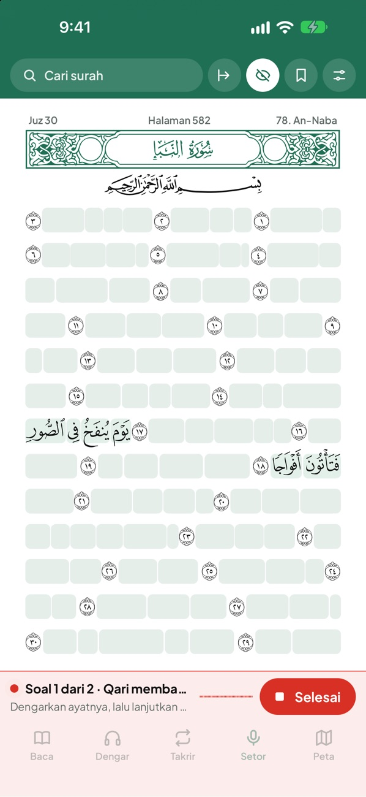
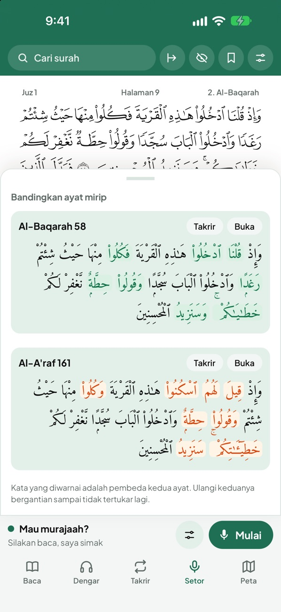
Tips agar AI mendengar dengan baik
- Tempat yang tenang, HP sekitar 30 cm dari mulut.
- Suara jelas dengan tempo biasa, tidak perlu keras.
- AI bisa keliru, terutama pada suara anak-anak, bacaan yang sangat pelan, atau tempat yang ramai. Ketuk kata untuk melihat apa yang terdengar AI. Anggaplah hasilnya sebagai bantuan, bukan pengganti guru.
Ada pertanyaan atau masukan?
Kalau ada bacaan benar yang ditandai salah, kirimkan tangkapan layar lembar hasil beserta nama surah dan ayatnya ke hi.mubeena@gmail.com. Lihat juga halaman Bantuan.
How to use Mubeena
Five tabs at the bottom of the app: Read, Listen, Repeat, Check and Map. This guide explains them all in a few minutes.
Before you start
- Open the app with an internet connection the first time: the Quran data is downloaded once, about 5 MB.
- Allow the microphone when asked. Your voice is checked by AI directly on your phone and is never sent anywhere.
- The quick guide inside the app can be opened again at any time: settings icon (top right) › Quick guide.
📖 Read
The complete Madinah mushaf. Swipe left or right to turn the page.
- Search surah or juz in the top bar, or Go to for a specific ayah or page. You can type a surah's name, for example "yasin".
- Tap an ayah to see its translation and bookmark it.
- Bookmarks (ribbon icon at the top) keep your place, with your own names and colours.

🎧 Listen
Listen to a reciter while memorizing. Choose from five reciters: Al-Husary, Mishary Alafasy, Saad Al-Ghamidi, Saud Al-Shuraim and Yasser Al-Dosari.
- Tap an ayah in the mushaf and choose From here and To here. Or open the settings button in the bottom bar and pick the surah and ayahs.
- Set Repeat each ayah, Repeat range, or Pause after each ayah to repeat after the reciter.
- Tap Play. Playback continues with the screen locked.

🔁 Repeat
Repeat your memorization until it is fluent.
- Open the Repeat settings, choose the ayahs and a target (for example 10×).
- Recite the range and tap +1 each time you finish a round.
- Or turn on Count automatically with AI: the AI listens and counts each time you reach the end of the range, marks wrong words, and the reciter helps when you get stuck.

🎙️ Check
Recite your memorization while the AI listens, like reciting to a teacher.
- Open the page or surah you want to recite. To start from a specific ayah, tap it and choose Start reciting from here.
- Want to recite without seeing the text? Turn on Memorization mode (eye icon at the top). Tap a hidden word to peek.
- Tap Start Reciting and recite clearly at a normal pace. Words change colour as you recite.
- A mistake: the word turns red and an alert sounds. If you don't correct it right away, the reciter recites the correct words; repeat from there.
- Stuck: after about 5 seconds of silence the next word appears and the reciter recites it. Continue after it.
- Tap Done. The results show what was correct, wrong and helped. Tap Save to memorization map to keep it.
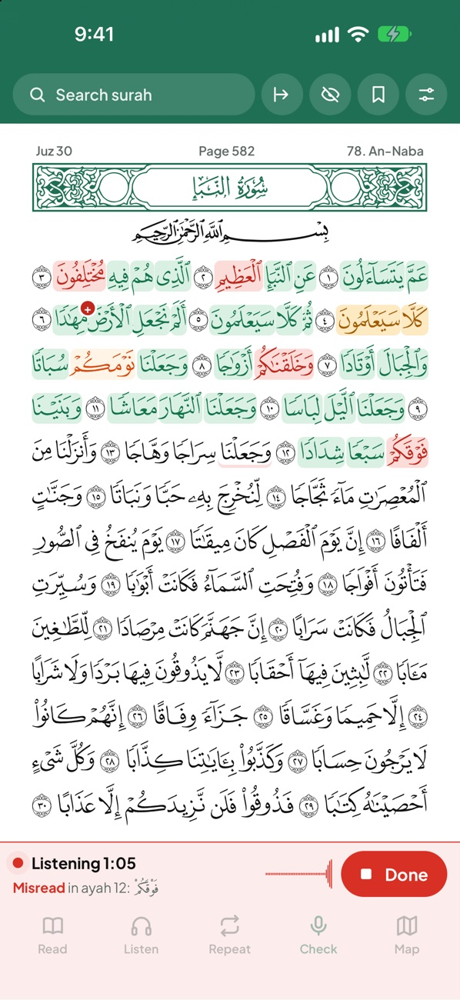
The reciter guides you, then see your results
The help settings are in the Check settings button: Help when stuck, Guide after a mistake, and the alert sound. Each can be turned off.


What the colours mean
- correct recited correctly
- wrong misread, skipped, or an added word
- corrected a mistake you corrected yourself
- helped the reciter helped when you were stuck or after a mistake
- note pronunciation not clear, not counted as a memorization mistake
- grey underline the AI is double-checking that word
🗺️ Map
Your memorization map: every word you have recited is coloured by its latest result, so you can see what is fluent and what needs more work. Summary shows your progress per surah and per juz.
Your data is stored only on your phone. Make a backup in settings › Data backup so you can move it to a new phone.

More
- Continue-the-ayah test (Check settings button): the reciter recites a random ayah and you continue from memory, like a hifz exam.
- Similar ayahs: if you mix up an ayah with a similar one, the results show that ayah and the difference.
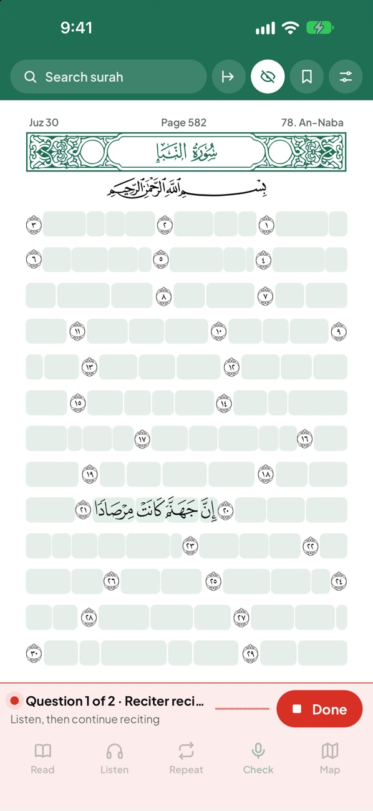
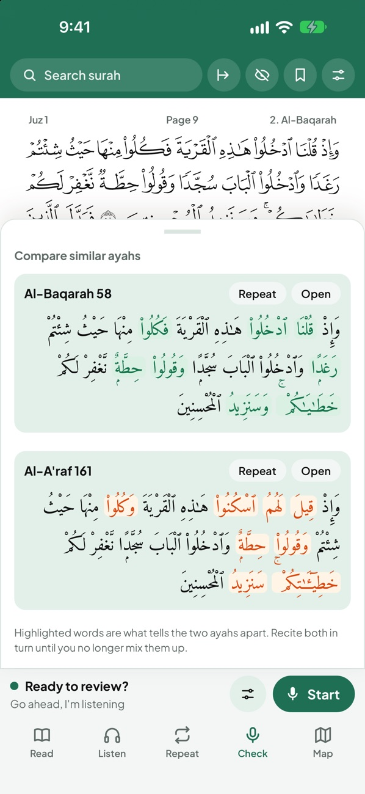
Tips for the AI to hear you well
- A quiet place, with the phone about 30 cm from your mouth.
- A clear voice at a normal pace; no need to be loud.
- The AI can mishear, especially children's voices, very quiet recitation or noisy places. Tap a word to see what the AI heard. Treat the results as a help, not as a replacement for a teacher.
Questions or feedback?
If a word you recited correctly is marked wrong, send a screenshot of the results with the surah and ayah to hi.mubeena@gmail.com. See also our Support page.